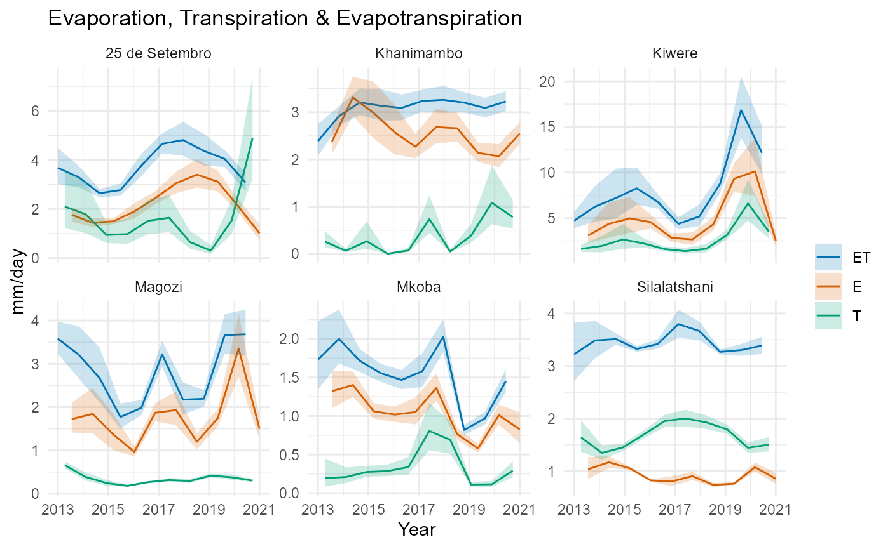
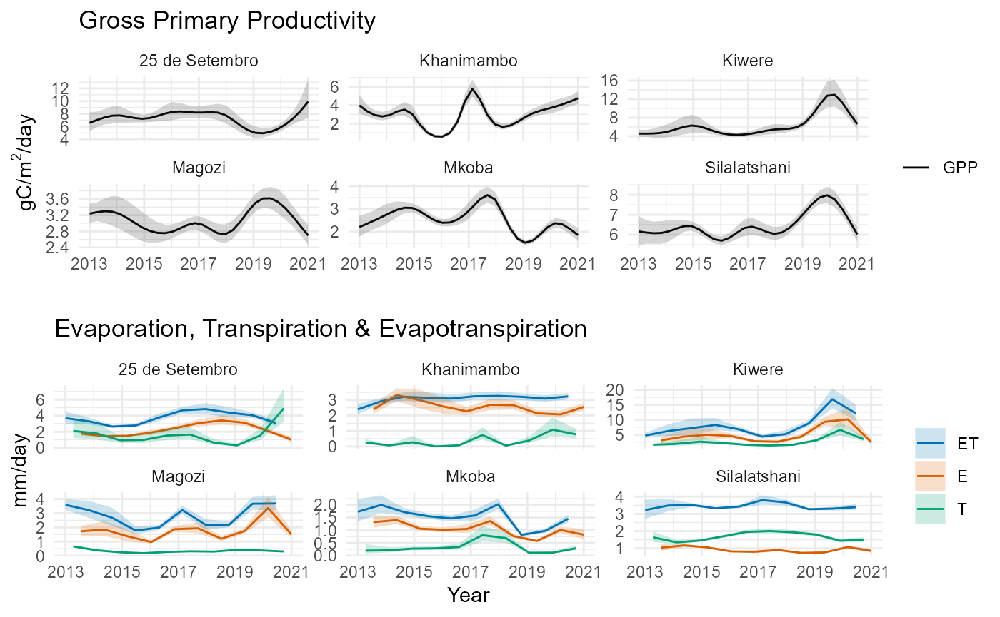

WUE plots
Michael Wellington, Petra Kuhnert, Roger Lawes, Luigi Renzullo, Jamie Pittock, Peter Ramshaw, Martin Moyo, Emmanuel Kimaro, Miguel Tafula, Andre van Rooyen
2022-08-22
WUE_plots.RmdPlots
ET_year_plot <- ggplot(data= ET_year_dat, aes(x=year)) +
geom_line(aes(y=value, col=var))+
geom_ribbon(aes(ymin=ll, ymax=ul, fill=var), alpha=0.2)+
scale_x_continuous(breaks=seq(2013, 2021, by=2))+
scale_color_manual(values=c("#0072B2", "#D55E00", "#009E73"))+
scale_fill_manual(values=c("#0072B2", "#D55E00", "#009E73"))+
theme(legend.title = element_blank())+
labs(x="Year", y="mm/day")+
facet_wrap(~scheme, ncol=3, scales="free_y") +
theme_minimal() +theme(legend.title=element_blank()) +
ggtitle('Evaporation, Transpiration & Evapotranspiration')
ET_year_plot
WUE_year_dat_var <- WUE_year_dat %>% filter(var==c("WUE"))
WUE_year_plot <- ggplot(data= WUE_year_dat_var, aes(x=year)) +
geom_line(aes(y=value))+
geom_ribbon(aes(ymin=ll, ymax=ul), alpha=0.2)+
scale_x_continuous(breaks=seq(2013, 2021, by=2))+
theme(legend.title = element_blank())+
labs(x="", y=expression(paste("gC/mm")))+
facet_wrap(~scheme, ncol=3) +
theme_minimal() + theme(legend.title=element_blank()) +
scale_color_manual(values=c("black"))
WUE_year_plot
GPP_year_dat <- WUE_year_dat %>% filter(var==c("GPP"))
GPP_year_plot <- ggplot(data= GPP_year_dat, aes(x=year)) +
geom_line(aes(y=value, col="GPP"))+
geom_ribbon(aes(ymin=ll, ymax=ul), alpha=0.2)+
scale_x_continuous(breaks=seq(2013, 2021, by=2))+
theme(legend.title = element_blank())+
labs(x="", y=expression(paste("gC/m"^2,paste("/day"))))+
facet_wrap(~scheme, ncol=3, scales="free_y") +
theme_minimal() +theme(legend.title=element_blank()) +
scale_color_manual(values=c("black")) +
scale_fill_manual(values=c("black")) + ggtitle('Gross Primary Productivity')
GPP_year_plot
GPP_ET_allschemeplot <- plot_grid(GPP_year_plot, ET_year_plot, ncol=1)
GPP_ET_allschemeplot